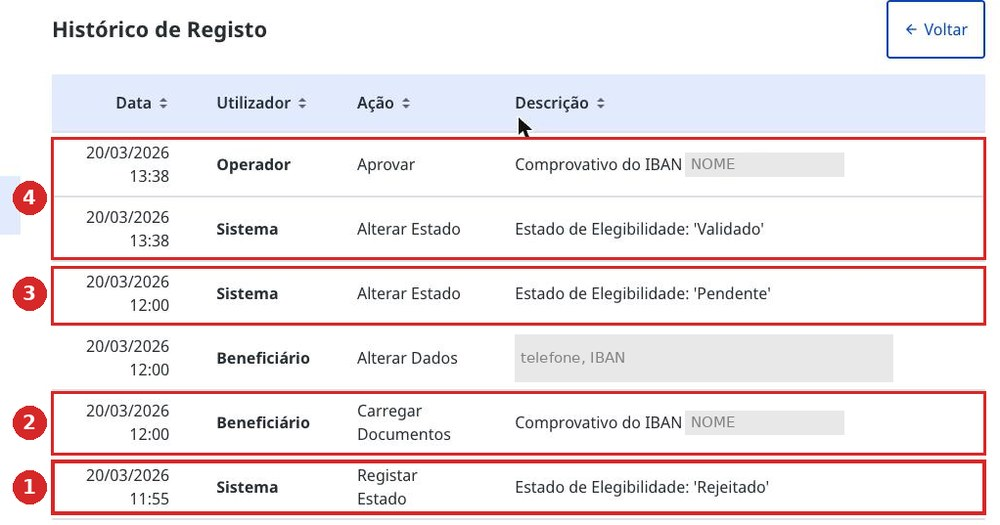
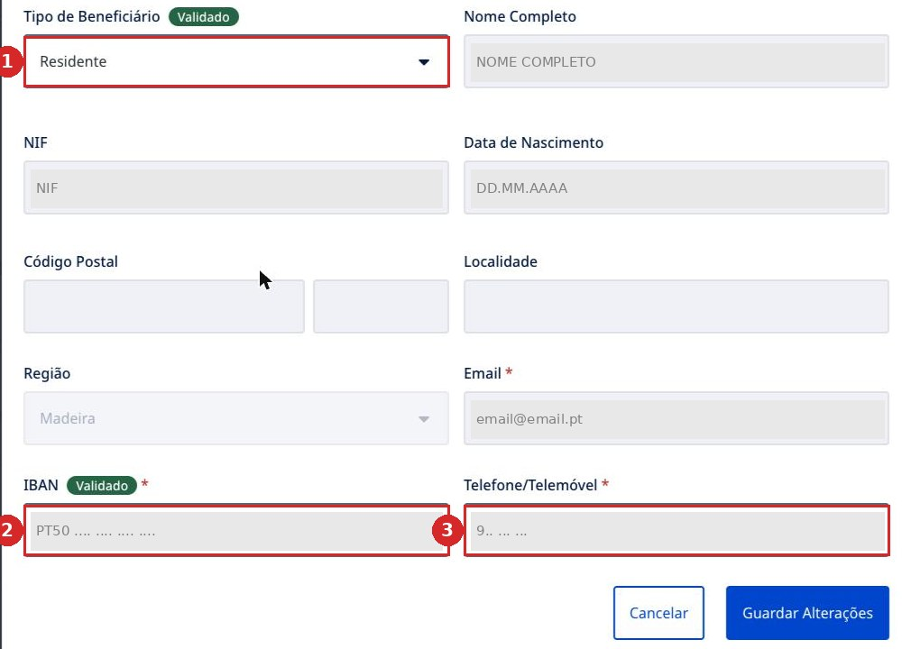
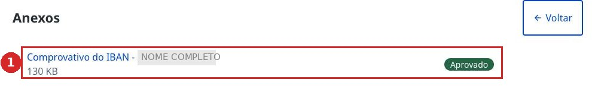

Die Geschichte einer Registrierung, Minute für Minute
Hier ist die Histórico do Registo aus dem persönlichen Bereich. Wird von unten nach oben gelesen.

- 1Rejeitado — 11:55. Das System hat das Profil aus den Daten von Autenticação.gov erstellt und sofort die Ablehnung gesetzt. Der Nutzer hatte dabei noch nichts getan.
- 2Der Nutzer lädt Comprovativo do IBAN hoch und trägt IBAN und Telefonnummer ein — 12:00.
- 3Pendente — 12:00. Der Status ändert sich von selbst, sobald das Profil ausgefüllt ist.
- 4Validado — 13:38. Ein Sachbearbeiter öffnete das Dokument, genehmigte es, und der Status wurde grün. Zwischen der „Ablehnung“ und der Genehmigung lagen eine Stunde und dreiundvierzig Minuten.
Was zu tun ist, wenn Sie Rejeitado sehen
Startseite → Aceder à Área Pessoal → Alterar Dados. IBAN und Telefonnummer eintragen, speichern. Danach den Kontonachweis hochladen.
Danach bleibt nur warten: Der Status wechselt von selbst, sobald ein Sachbearbeiter Ihr Dokument öffnet. Solange der Status nicht Validado lautet, ist es zu früh für den Antrag — die Auszahlung geht nicht durch.
Der persönliche Bereich: was es dort überhaupt gibt
Die Schaltfläche Aceder à Área Pessoal ist unten auf der Startseite versteckt, unter der Karte mit Ihren Daten. Dahinter liegen vier Bereiche, über die auf gov.pt keine Zeile steht.
Was sich ändern lässt
Die Schaltfläche Alterar Dados öffnet ein Formular, in dem nur drei Felder aktiv bleiben: Begünstigtentyp, IBAN und Telefone/Telemóvel. Name, NIF, Geburtsdatum, E-Mail, Postleitzahl und Ort bleiben für immer grau.

Anhänge des Profils
Im Bereich Anexos liegt Comprovativo do IBAN — der Kontonachweis der Bank. Ohne ihn geht keine Auszahlung durch, und genehmigt wird er von einem Sachbearbeiter, nicht vom System.

Familie
Situação Familiar — hier werden Ehepartner, Kinder und Angehörige hinzugefügt, damit ihre Flüge in denselben Antrag gehören. Wie das geht — Familie.
Anträge
Histórico de Pedidos — die Liste Ihrer Anträge mit Status. Hierher kommen auch die Correção Solicitada-Benachrichtigungen. Was die Status bedeuten und wie lange es dauert — Nach dem Einreichen in der Anleitung.
Telefon und E-Mail — nur die eigenen
Telefon und E-Mail im Profil müssen Ihre eigenen sein — dieselben, die Sie beim Erhalt der Chave Móvel Digital verwendet haben. Wenn Sie einer anderen Person helfen und Ihre eigenen Kontaktdaten in deren Profil eintragen, geht der Zugang zu Ihrem eigenen Bereich kaputt. Ausführlich — wenn Sie für jemand anderen beantragen.